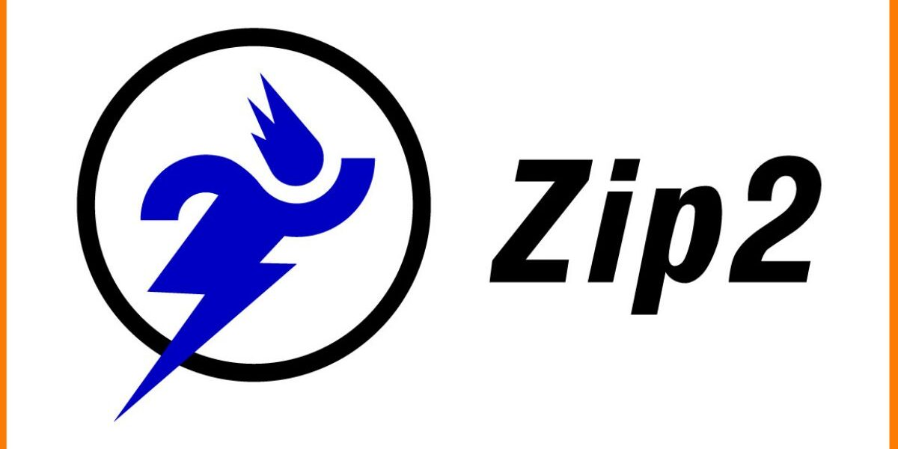
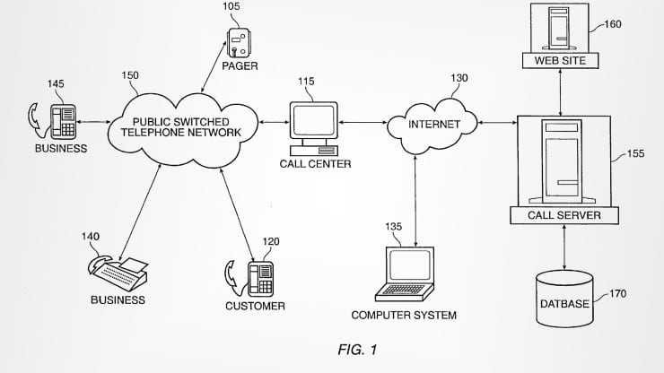
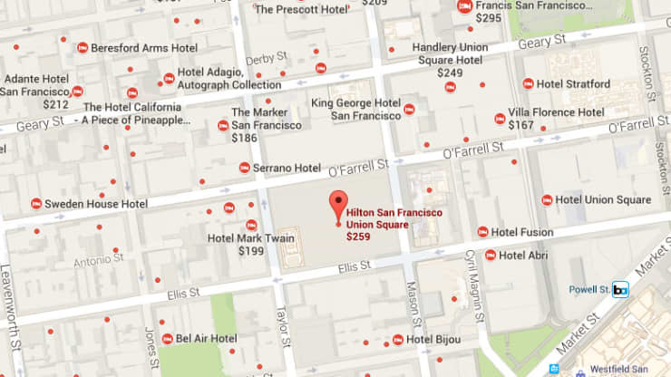
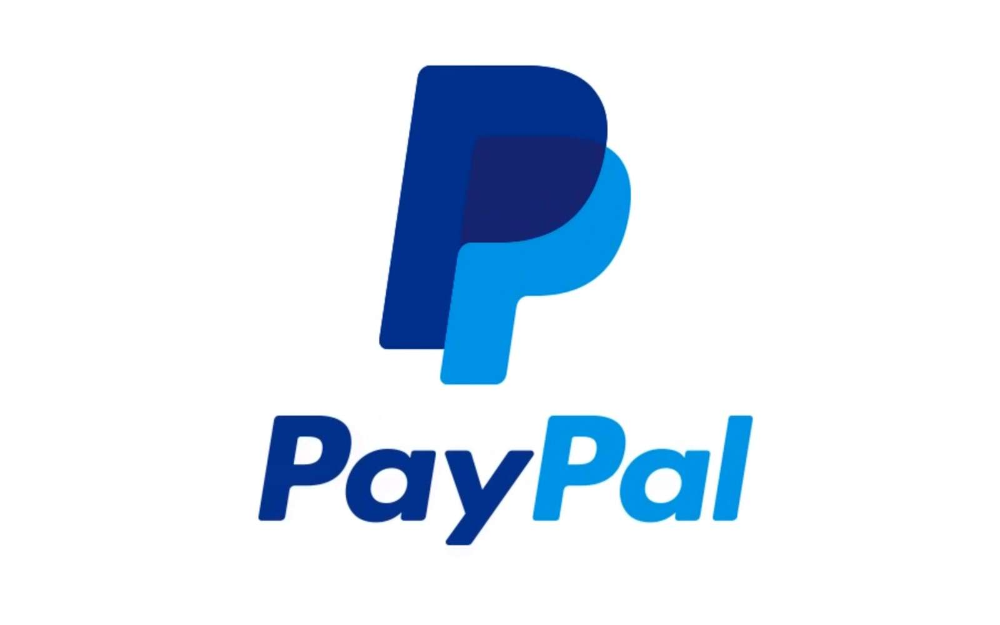
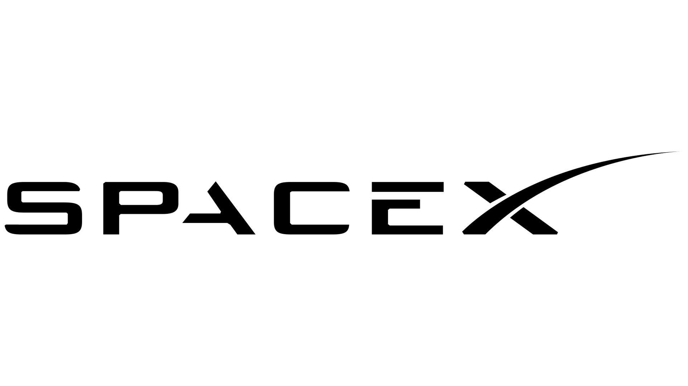
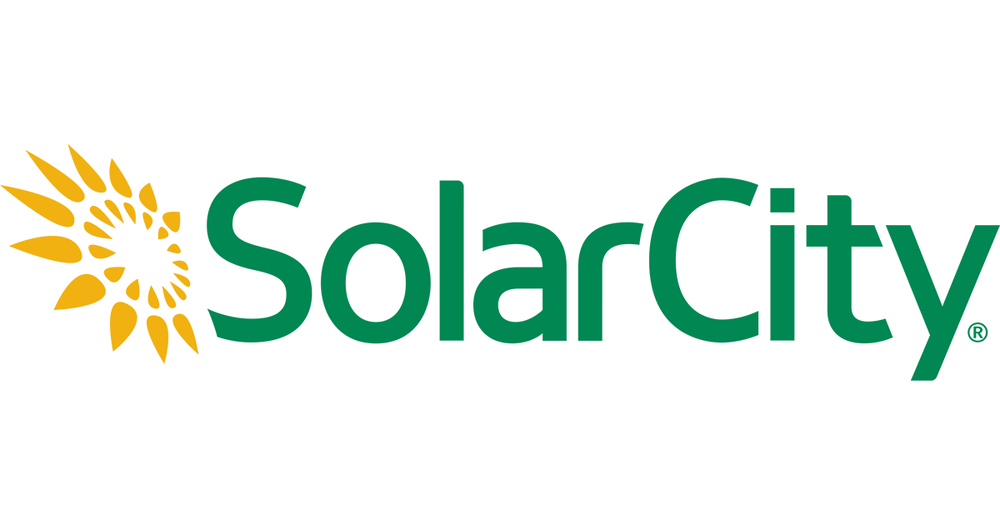
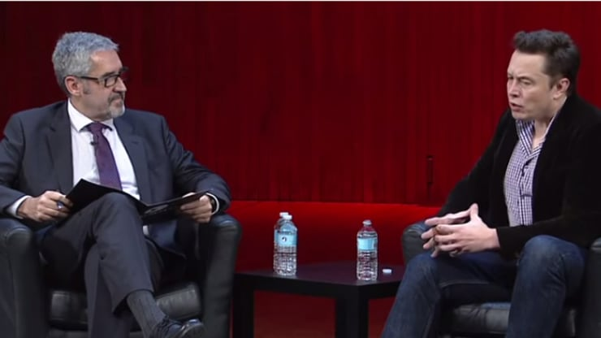

Blastar
Jeu vidéo
Jeu vidéo
Guide touristique en ligne
Internet
Internet
Paiement en ligne
Fusée Falcon
Voitures électriques
Systèmes de production d'énergie solaire
Transport
Transport
Blastar

Avant de populariser les voitures électriques et de commencer à planifier la colonisation de Mars, Musk était un enfant qui aimait les jeux vidéo. Alors, à l'âge de 12 ans, il a créé le sien. C'est assez impressionnant, mais Musk étant Musk, il a vendu le jeu à un magazine pour environ 500 dollars. Vous êtes curieux de savoir ce que l'inventeur prépubère a mis au point ? Vous pouvez jouer à une version Web de Blastar aujourd'hui en cliquant ici.
Zip2
La première société de logiciels Web de Musk, fondée avec son frère grâce à l'argent prêté par leur père, avait pour but d'aider l'industrie de la presse à créer des "guides urbains" pour les utilisateurs en ligne. Après avoir envisagé, et finalement rejeté, une fusion avec CitySearch (IACI), Zip2 a été rachetée par Compaq pour 307 millions de dollars en 1999. Musk a reçu 22 millions de dollars de cette vente.
Appels téléphoniques en ligne
En 1997, Musk a eu l'idée de permettre aux ordinateurs d'appeler des lignes terrestres (ce pour quoi il a obtenu un brevet en 2001). L'idée était cependant un peu moins complexe que ce que nous utilisons aujourd'hui avec Skype. Au lieu de cela, les utilisateurs pouvaient cliquer sur les coordonnées d'une entreprise en ligne et les appels étaient ensuite acheminés vers l'entreprise via un centre d'appels.
Recherches géographique
Aux premiers jours d'Internet, trouver une entreprise proche de soi n'était pas la priorité qu'on lui accorde aujourd'hui. Musk, en 1998, pensait que cela pourrait l'être un jour, pourtant. Son idée était de créer un système qui, dans un premier temps, recherchait des résultats dans la zone géographique la plus proche de vous, puis élargissait automatiquement cette zone (ce qui signifie que l'utilisateur n'aurait pas à affiner sa recherche) jusqu'à ce qu'il y ait suffisamment de résultats.
X.com (Paypal)
En 1999, Musk a cofondé une société appelée X.com, axée sur les services financiers et les paiements par e-mail. Un an plus tard, X.com fusionne avec Confinity et adopte le nom du service le plus connu de cette société, PayPal. Les deux technologies ont donné naissance à une centrale qui a ouvert la voie aux paiements en ligne et qui a finalement été rachetée par eBay en 2002 pour 1,5 milliard de dollars. Musk a empoché 165 millions de dollars dans cette transaction.
SpaceX
L'entreprise aérospatiale de Musk pourrait être aussi célèbre que ses automobiles. Fondée en 2002 pour contribuer à réduire le coût du transport spatial et permettre la colonisation de Mars, les fusées Falcon 1 et Falcon 9 de SpaceX sont conçues pour être réutilisables. La société a effectué six missions de réapprovisionnement en fret de la Station spatiale internationale et a obtenu un contrat de la NASA pour développer un vaisseau spatial destiné à transporter des membres d'équipage vers et depuis l'ISS.
La société (qui est privée) a subi un revers au début de l'année 2015 lorsqu'une de ses fusées Falcon 9 a explosé après le décollage. Elle a depuis suspendu ses vols, ce qui lui donne le temps de revoir la conception de la barre de métal de deux pieds qui s'est brisée et qui, selon M. Musk, a provoqué l'explosion.
Tesla

De nos jours, il est impossible de ne pas penser à Musk sans penser rapidement à Tesla, la société de voitures électriques cotée en bourse dont l'action a augmenté de près de 700 % au cours des deux dernières années et demie, pour atteindre un peu moins de 213 dollars par action au moment de la mise sous presse. Malgré des résultats du troisième trimestre inférieurs aux attentes de Wall Street, la société affiche un chiffre d'affaires de 1,24 milliard de dollars et des prévisions solides pour les livraisons futures.
Les voitures sont très demandées, en particulier la prochaine Model 3 (qui a une autonomie de 320 km et dont le prix de départ est de 35 000 dollars), mais la société continue à avoir du mal à fabriquer suffisamment de voitures pour répondre à cette demande. C'est pourquoi elle prévoit de vendre 500 millions d'actions pour financer ses dépenses d'investissement.
SolarCity
Cofondée en 2006 par Musk et ses cousins, SolarCity est depuis devenue le deuxième fournisseur de systèmes d'énergie solaire du pays, avec des revenus de 102,8 millions de dollars au dernier trimestre. Bien que son activité soit centrée sur la Californie, elle fournit également des installations dans certaines régions de 14 autres États (et dans le district de Columbia).
Elle est en train de créer des systèmes de stockage permettant aux gens d'exploiter l'énergie produite par les panneaux solaires pendant la nuit. La société collabore également avec Tesla pour offrir des stations de recharge solaire gratuites aux propriétaires de véhicules empruntant la route 101 de San Francisco à Los Angeles ou inversement.
Hyperloop
La dernière idée de Musk pourrait être sa plus ambitieuse. Ce système de transport, présenté en 2013 et toujours en cours de formulation, vise à permettre aux navetteurs de se déplacer entre Los Angeles et San Francisco en 35 minutes ou moins, soit plus rapidement qu'un vol commercial.
Le système ferroviaire fonctionnerait dans un tube à pression d'air extrêmement faible, ce qui réduirait théoriquement la traînée et permettrait d'atteindre des vitesses plus élevées, jusqu'à 800 miles par heure, tout en consommant moins d'énergie. Cette vision complète est cependant encore loin de la réalité. La première entreprise de la société devrait commencer sa construction l'année prochaine, avec une boucle de 8 km autour de Quay Valley, en Californie. Le plus gros obstacle est le coût du terrain et de la technologie nécessaires pour faire de ce projet une réalité.
Jet électrique
Elon Musk n'a pas officiellement commencé à travailler sur ce projet, mais l'année dernière, lors du symposium du centenaire de l'aéronautique et de l'astronautique du MIT, il a déclaré qu'il "jouait" avec ce concept. Musk a également évoqué dans The Colbert Report la possibilité d'avoir un "jet supersonique électrique à décollage et atterrissage verticaux", qui utilise des moteurs électriques pour entraîner un ventilateur, lequel propulse l'avion. Il ne nécessiterait pas de longue piste, ce qui permettrait de réduire la taille des aéroports.
source : https://www.cnbc.com/2015/11/13/elon-musks-10-greatest-inventions-changing-the-world.html